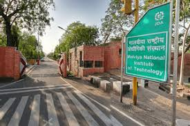
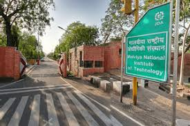

About :
The institute runs under the Public-Private-Partnership (PPP) model. IIIT Kota institute is initially mentored by Malaviya National Institute of Technology (MNIT Jaipur). The institute offers BTech in the discipline of Computer Science & Engineering and Electronics & Communication Engineering only.
IIIT Kota offers a four-year BTech programme at the UG level. Admission to the programme is based on JEE Main rank, followed by Joint Seat Allocation Authority (JoSAA) Counselling.
Established
2013
Also Known As
IIIT
City
Jaipur
Website
Go to Website
Accepted Exams
JEE Main
Popular Courses
B.E./B.Tech.
Ownership
Public-Private
Total Courses
2 courses across 1 stream
Courses Offered :
Scholarships :
 
